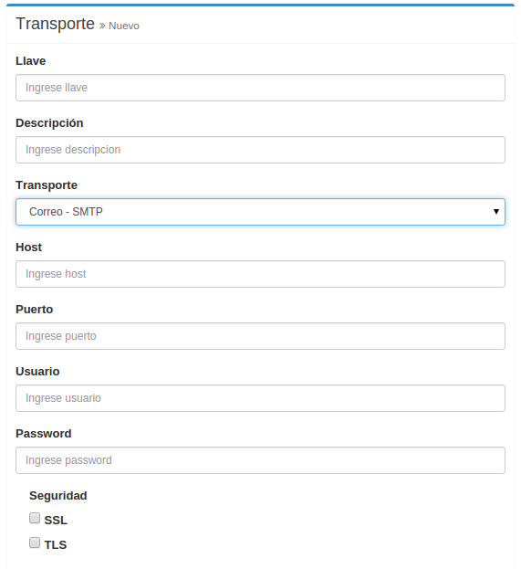
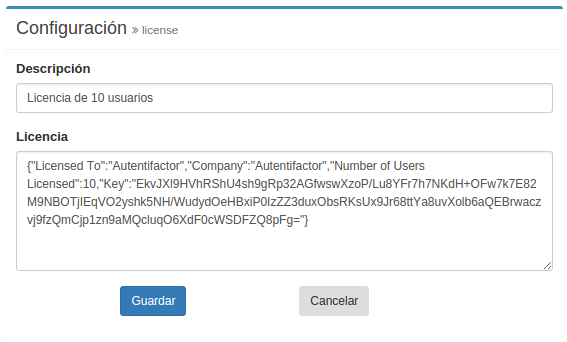

Consola de Administración
Configuración de transportes
Correo electrónico - Sendgrid
- Ir a Configuración.
- Clic en Crear transporte.
- Seleccionar Correo - Sendgrid.
- Ingrese los siguientes campos:
- Llave: Llave única.
- Descripción: Descripción del transporte configurado.
- Usuario: Nombre del usuario de la cuenta.
- Llave de API: Llave de la cuenta de SendGrid.
Correo electrónico - SMTP
- Ir a Configuración.
- Clic en Crear transporte.
- Seleccionar Correo - SMTP.
Outlook.com
- Configure los siguientes campos:
- Llave: Llave única.
- Descripción: Descripción del transporte configurado.
- Host: smtp-mail.outlook.com.
- Puerto: 587.
- Usuario: La cuenta de outlook.com a utilizar.
- Password: Contraseña.
- SSL: No.
- TLS: Si.
Google Apps / GMail
- Configure los siguientes campos:
- Llave: Llave única.
- Descripción: Descripción del transporte configurado.
- Host: smtp.gmail.com.
- Puerto: 465.
- Usuario: La cuenta a utilizar.
- Password: Contraseña.
- SSL: Si.
- TLS: No.
SMTP
- Configure los siguientes campos:
- Llave: Llave única.
- Descripción: Descripción del transporte configurado.
- Host: Nombre de dominio.
- Puerto: Puerto.
- Usuario: La cuenta a utilizar.
- Password: Contraseña.
- SSL: Transporte seguro por capa de seguridad SSL.
- TLS: Transporte seguro por capa de seguridad TLS.

SMS
- Ir a Configuración.
- Clic en Crear transporte.
- Seleccionar SMS - Twilio.
- Ingrese los siguientes campos:
- Llave: Llave única.
- Descripción: Descripción del transporte configurado.
- Número de Twilio: Número telefónico de Twilio.
- SID: Sender ID de la cuenta.
- Token: Token id de la cuenta de Twilio.
Soft token - Móvil
- Ir a Configuración.
- Clic en Crear transporte.
- Seleccionar Google Authenticator.
El cliente utiliza Google Authenticator app
Soft token - Escritorio
- Ir a Configuración.
- Clic en Crear transporte.
- Seleccionar Google Authenticator.
El cliente utiliza Authenticator Chrome plugin
Asociando Grupos y Usuarios
Grupos
Crear grupo
- Ir a Grupos.
- Clic en Crear grupo.
- Ingrese nombre del grupo.
- Ingrese descripción.
- Seleccione transporte.
- Seleccione adaptador.
- Clic en guardar.
Editar grupo
- Ir a Grupos.
- Clic en un grupo de la lista.
- Edite descripción.
- Seleccione transporte.
- Seleccione adaptador.
- Clic en guardar.
Cuentas de Usuario
Enrolamiento
- Ir a Cuentas.
- Clic en Crear Cuenta.
- Ingrese Correo Electrónico.
- Ingrese Celular.
- Ingrese Nombre.
- Ingrese Apellido.
- Seleccione el Grupo.
- Seleccione en Opciones Debe Confirmar.
- Clic en Guardar.
Desactivar
- Ir a Cuentas.
- Clic en boton de desactivar.
- Clic en el boton Si del mensaje.
Activar
- Ir a Cuentas.
- Clic boton de editar.
- Seleccione en Opciones Activar.
Restablecer
- Ir a Cuentas.
- Clic en boton de editar.
- Seleccione en Opciones Restablecer.
Multiples cuentas
- Ir a Cuentas.
- Clic en Enrolar por CSV.
- Seleccione el Grupo.
- Ingrese el texto del CSV.
- Click en Guardar.
Bitácoras
Bitácoras contiene una lista de eventos del sistema. Cada entrada contiene:
- Tipo: Puede ser info o error.
- Descripción: Descripción de la entrada.
- Usuario: Usuario que genero la entrada.
- IP: IP.
- Llamado: Tipo de llamado HTTP.
- Ruta: Ruta API.
- Creado: Fecha y Hora.

Configuraciones
Variables del sistema
- Ir a Configuración.
- Clic en llave default:system:env.
- Edite los siguientes campos:
- Descripción: Descripción.
- Timeout de confirmación: Expiración del enlace de confirmación en segundos.
- Transporte de correo predeterminado: Transporte de correo del sistema.
- Transporte de restablecimiento predeterminado: Transporte para recibir OTC de restablecimiento, solo aplica para transportes SMS o correo electrónico.

Licencia
- Ir a Configuración.
- Clic en llave license.
- Edite descripción.
- Ingrese licencia en Licencia y clic guardar.
- Su sistema se actualizara con la nueva licencia.

Llaves de API
- Ir a Integraciones.
- Clic en Crear API token.
- Ingrese Descripción
- Ingrese IP. Use 0.0.0.0 para habilitar cualquier IP.
- Clic en guardar.
- Utilice el token como Bearer con el API. Recomendamos su uso en ambientes server a server.

Perfil de Cuenta
Perfil de cuenta permite establecer el soft token por medio de QR y la contraseña. Aplica por igual para el enrolamiento y restablecimiento de cuenta.
Contraseña
- Ir a Perfil de Cuenta.
- Click Continuar a Contraseña.
- Ingrese Contraseña.
- Ingrese Confirmar Contraseña.
- Click Aplicar.
- Ingrese el código.
- Clic en Verificar.
OTP
- Ir a Perfil de Cuenta.
- Leer TOTP QR con app de token (Google Authenticator o aplicación de escritorio) o ingresar semilla manualmente.
- Clic en Provisionar QR.
- Ingrese el código.
- Clic en Verificar.